본 포스트는 서울대학교 Chenglin Fan 교수님의 4190.407 Algorithms (Design and Analysis of Algorithms) 강의 자료(11강 Weighted Graphs: Dijkstra and Bellman-Ford, 총 95장)를 바탕으로, 강의를 처음 듣는 독자도 논리적 흐름을 따라갈 수 있도록 재구성한 것입니다. 1강 표지에 “Part of Slides Borrowed From Mary Wootters”라고 밝혀 두었듯 이 시리즈의 슬라이드는 상당 부분 Stanford의 Mary Wootters 교수님 자료에서 가져온 것이며, 이번 강의의 예제도 Stanford 캠퍼스 지도 위에 그린 그래프입니다. 본문의 대섹션 구분은 3번째 슬라이드의 Today가 세워 둔 흐름 — What if the graphs are weighted? → Part 1: Dijkstra! → Part 2: Bellman-Ford! — 을 따르고, 94번째 슬라이드의 Recap: shortest paths로 맺었습니다.
한 줄 요약 (TL;DR)
“간선에 비용이 붙으면 BFS의 걸음 수는 더 이상 거리가 아닙니다. 다익스트라는 가장 가까운 미확정 정점부터 하나씩 확정하고, 벨만-포드는 모든 간선을 n−1번 되풀이해 갱신합니다.”
가중 그래프(weighted graph)에서 경로의 비용은 지나는 간선 가중치의 합이고, 두 정점 사이의 거리 \(d(s,v)\)는 가장 싼 경로의 비용입니다. 최단 경로의 부분 경로도 최단 경로라는 성질 위에서, 다익스트라 알고리즘(Dijkstra’s algorithm)은 정점마다 거리의 과대추정값 \(d[v]\)를 두고, 아직 확정되지 않은 정점 가운데 \(d[u]\)가 가장 작은 것을 골라 이웃을 갱신한 뒤 확정합니다. 가중치가 음이 아니면 확정되는 순간 \(d[u] = d(s,u)\)임을 귀납법으로 보일 수 있고, 수행 시간은 쓰는 자료구조에 따라 배열이면 \(O(n^2)\), 레드-블랙 트리면 \(O((n+m)\log n)\), 피보나치 힙이면 \(O(n\log n + m)\)입니다. 벨만-포드 알고리즘(Bellman-Ford algorithm)은 정점을 고르지 않고 모든 간선을 \(n-1\)라운드 동안 갱신하므로 \(O(nm)\)으로 더 느리지만, \(i\)번째 라운드 뒤의 값이 간선 \(i\)개 이하인 경로의 최소 비용이라는 사실이 가중치의 부호와 무관하게 성립하므로 음수 간선을 다룰 수 있고, 한 라운드를 더 돌려 값이 바뀌면 음수 순환(negative cycle)이 있다고 보고합니다.
개요 (Today)
슬라이드는 지난 두 강의에서 다룬 내용을 먼저 짚습니다.
- 그래프!
- DFS — 위상 정렬(topological sorting), 강한 연결 요소(strongly connected components)
- BFS — 가중치 없는 그래프에서의 최단 경로(shortest paths in unweighted graphs)
그리고 오늘의 계획을 밝힙니다.
- 그래프에 가중치가 있다면 어떻게 될까요?
- Part 1: 다익스트라! — 오늘 수업의 대부분을 차지합니다.
- Part 2: 벨만-포드! — 시간이 되면 끝에 아주 빠르게 봅니다. 벨만-포드는 나중에 더 자세히 다시 다룰 것이므로, 오늘은 맛보기일 뿐입니다.
9강의 끝에서 BFS가 남긴 질문 가운데 하나가 가중치가 있는 그래프에서는 최단 경로를 어떻게 찾을까였습니다. 이번 강의가 바로 그 질문에 대한 답입니다.
가중 그래프라면? (What If the Graphs Are Weighted?)
캠퍼스 지도 위의 그래프 (Just the Graph)
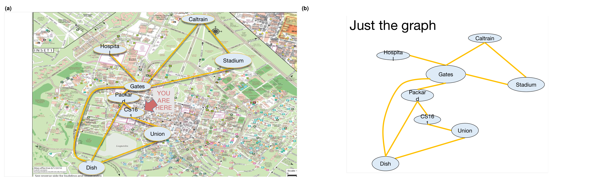
YOU ARE HERE는 강의실이 있는 CS161 건물을 가리킵니다. (b)는 지도를 걷어 내고 그래프만 남긴 것으로, 간선은 Hospital–Gates, Gates–Caltrain, Caltrain–Stadium, Gates–Stadium, Gates–Packard, Gates–Dish, Packard–CS161, Packard–Dish, CS161–Union, Union–Dish의 열 개입니다. 아직 간선에 숫자가 없으므로, 이 상태에서 최단 경로를 묻는 것은 9강의 BFS가 다룬 문제와 같습니다. 원본 슬라이드에서 Hospital, Packard, CS161이 타원 안에서 두 줄로 잘려 찍혀 있습니다.정점 여덟 개와 간선 열 개짜리 그래프입니다. 이 그래프에서 Gates에서 Union까지 가장 빨리 가는 길을 묻는 것으로 강의가 시작합니다.
Gates에서 Union까지의 최단 경로는? (Shortest Path from Gates to the Union?)
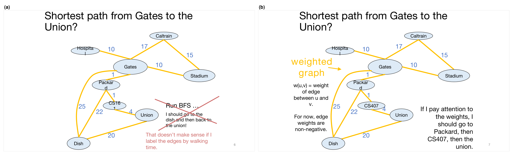
CS161이던 정점의 이름이 (b)부터 CS407로 바뀌어 있습니다.| 경로 | 간선 수 | 비용(걷는 시간) | 누가 고르는가 |
|---|---|---|---|
| Gates → Dish → Union | 2 | \(25 + 20 = 45\) | BFS |
| Gates → Packard → CS407 → Union | 3 | \(1 + 1 + 4 = 6\) | 가중치를 보는 알고리즘 |
- BFS는 간선의 수를 세므로, 간선 두 개짜리 경로를 고릅니다. 하지만 간선에 걷는 시간을 적어 두면 이 답은 말이 되지 않습니다.
- 간선마다 가중치(weight) \(w(u,v)\)가 붙은 그래프를 가중 그래프라 부릅니다. 당분간 가중치는 음이 아니라고 가정합니다.
- 가중치에 주의하면 간선이 하나 더 많더라도 Packard와 CS407을 거쳐 가는 쪽이 훨씬 빠릅니다.
슬라이드는 같은 정점을 어떤 장에서는 CS161(Stanford 원본의 과목 번호), 어떤 장에서는 CS407(이 강의의 과목 번호 4190.407)로 적습니다. 두 이름은 같은 정점이며, 본 포스트는 CS407로 통일해 부르겠습니다.
최단 경로 문제 (Shortest Path Problem)
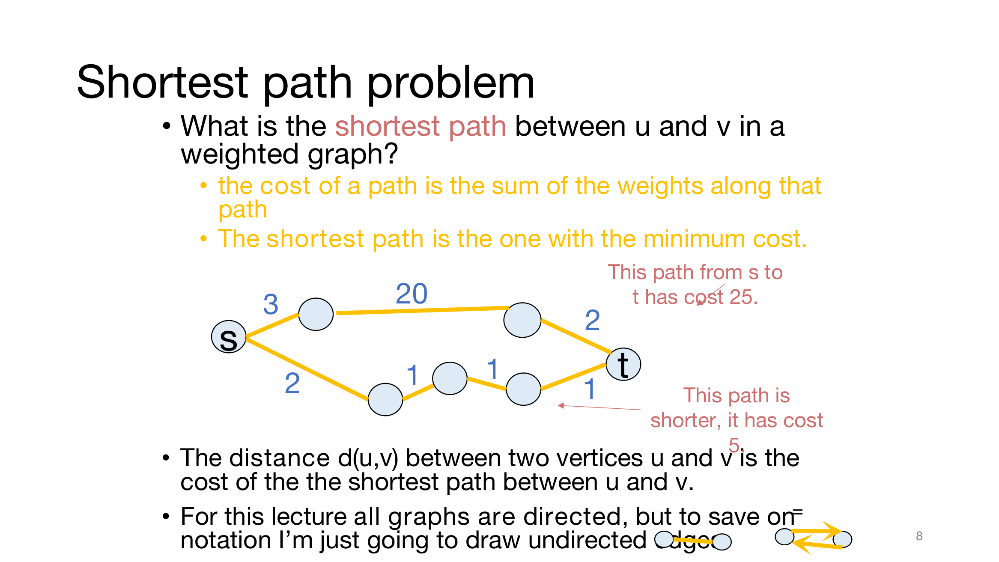
가중 그래프에서 경로 \(P = (v_0, v_1, \ldots, v_k)\)의 비용(cost)은 경로를 따라 놓인 간선 가중치의 합입니다.
\[\mathrm{cost}(P) \;=\; \sum_{j=1}^{k} w(v_{j-1}, v_j)\]
\(u\)에서 \(v\)로 가는 경로 가운데 비용이 가장 작은 것을 최단 경로(shortest path)라 하고, 그 비용을 두 정점 사이의 거리(distance) \(d(u,v)\)라 합니다. 관례대로 \(u\)에서 \(v\)로 가는 경로가 없으면 \(d(u,v) = \infty\)로 둡니다.
- 그림의 위쪽 경로는 비용이 \(3 + 20 + 2 = 25\), 아래쪽 경로는 \(2 + 1 + 1 + 1 = 5\)입니다. 간선 수로는 위쪽이 짧지만, 거리를 정하는 것은 비용입니다.
- 이번 강의의 그래프는 모두 방향 그래프입니다. 다만 표기를 아끼려고 방향 없는 간선으로 그리는데, 이는 서로 반대 방향의 간선 두 개를 한 번에 그린 것입니다.
최단 경로 (Shortest Paths)
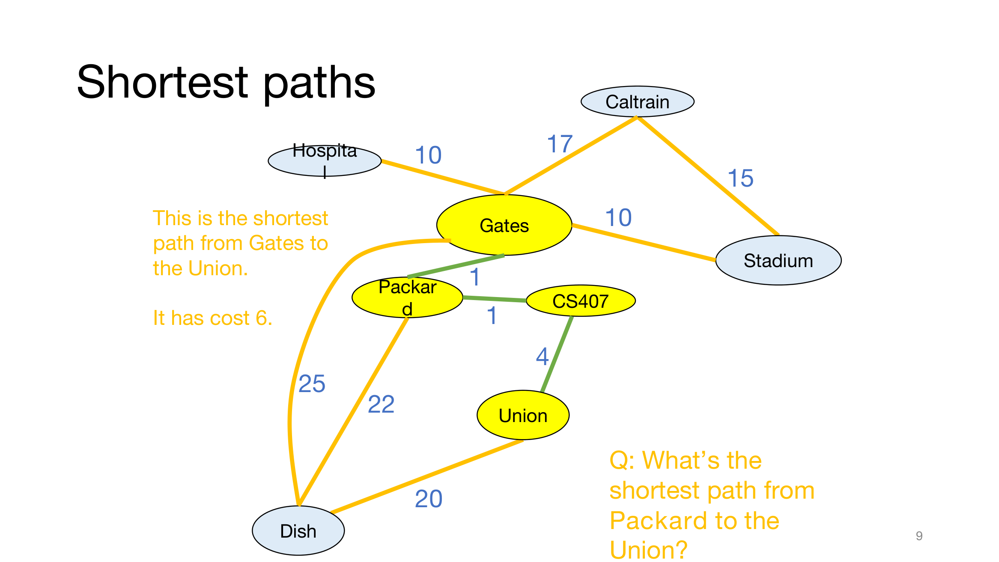
- Gates에서 Union까지의 최단 경로는 Gates → Packard → CS407 → Union이고, 비용은 6입니다.
- 슬라이드는 질문을 하나 남깁니다 — Packard에서 Union까지의 최단 경로는 무엇일까요?
슬라이드에 답은 적혀 있지 않지만, 그래프를 보면 Packard → CS407 → Union(비용 \(1 + 4 = 5\))입니다. 다른 길인 Packard → Dish → Union은 \(22 + 20 = 42\)입니다. 눈여겨볼 점은 이 답이 Gates에서 Union까지의 최단 경로의 뒷부분 그대로라는 것이며, 다음 워밍업이 그것이 우연이 아님을 보여 줍니다.
워밍업 (Warm-up)
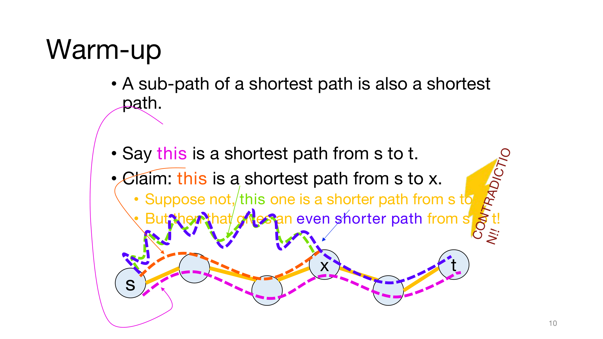
- 최단 경로의 부분 경로도 최단 경로입니다.
- \(s\)에서 \(t\)로 가는 최단 경로 \(P\)가 있고, 그 위의 정점 \(x\)에서 \(P\)를 앞부분 \(P_{s \to x}\)와 뒷부분 \(P_{x \to t}\)로 나눈다고 합시다.
- 주장: \(P_{s \to x}\)는 \(s\)에서 \(x\)까지의 최단 경로입니다.
- 그렇지 않다고 해 봅시다. 그러면 \(s\)에서 \(x\)까지 더 짧은 경로 \(Q\)가 있습니다.
- 그런데 그러면 \(Q\)에 \(P_{x \to t}\)를 이은 것이 \(s\)에서 \(t\)까지 더 짧은 경로가 됩니다! 모순입니다.
이 논증을 식으로 쓰면 한 줄입니다.
\[ \mathrm{cost}(Q) + \mathrm{cost}(P_{x \to t}) \;<\; \mathrm{cost}(P_{s \to x}) + \mathrm{cost}(P_{x \to t}) \;=\; \mathrm{cost}(P) \]
\(P\)가 \(s\)에서 \(t\)까지의 최단 경로이고 \(x\)가 \(P\) 위의 정점이면, \(P\)의 \(s\)부터 \(x\)까지 부분은 \(s\)에서 \(x\)까지의 최단 경로입니다. 따라서 다음이 성립합니다.
\[d(s,t) \;=\; d(s,x) + \mathrm{cost}(P_{x \to t})\]
같은 논증이 앞부분이 아닌 어느 구간에든 그대로 통하므로, 최단 경로의 어떤 부분 경로도 최단 경로입니다. 이 보조정리는 뒤에서 다익스트라의 정당성 증명과 벨만-포드의 귀납 단계에서 모두 핵심 도구로 쓰입니다.
단일 출발점 최단 경로 문제 (Single-Source Shortest-Path Problem)
- 한 정점(Gates)에서 다른 모든 정점까지의 최단 경로를 알고 싶습니다.
슬라이드의 표를 옮기면 다음과 같습니다.
| 목적지 | 비용 | 가는 길 |
|---|---|---|
| Packard | 1 | Packard |
| CS407 | 2 | Packard–CS407 |
| Hospital | 10 | Hospital |
| Caltrain | 17 | Caltrain |
| Union | 6 | Packard–CS407–Union |
| Stadium | 10 | Stadium |
| Dish | 23 | Packard–Dish |
- 슬라이드의 노란 단서대로, 이 정보가 꼭 표로 저장되는 것은 아닙니다. 어떻게 표현할지는 응용에 따라 다릅니다.
표에서 두 가지를 읽을 수 있습니다.
- Dish는 직통 간선(25)보다 Packard를 거치는 길(\(1 + 22 = 23\))이 더 쌉니다. 바로 이어진 이웃이라고 해서 직통 간선이 최단 경로인 것은 아닙니다.
- ‘가는 길’ 열은 서로를 연장한 모양입니다. Union으로 가는 길은 CS407로 가는 길에 간선 하나를 붙인 것이고, CS407로 가는 길은 Packard로 가는 길에 간선 하나를 붙인 것입니다. 워밍업의 보조정리 덕분에 최단 경로들을 이렇게 하나의 트리로 모아 담을 수 있으며, 이 트리는 다익스트라에서 다시 등장합니다.
예 (Example)
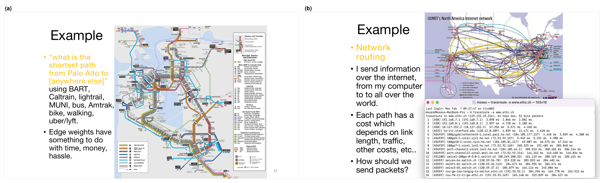
traceroute -a www.ethz.ch를 실행한 결과로, 출발 컴퓨터에서 ETH Zürich의 웹 서버까지 패킷이 거친 라우터 16개를 차례로 보여 주며, 각 줄 끝의 ms 값이 그 라우터까지 왕복하는 데 걸린 시간입니다. 왼쪽 글은 각 경로에 회선 길이, 트래픽 등에 따라 정해지는 비용이 있다고 말하고, 그렇다면 패킷을 어떻게 보내야 하느냐고 묻습니다.- 대중교통 길 찾기: BART, Caltrain, 경전철, MUNI, 버스, Amtrak, 자전거, 도보, 우버·리프트를 써서 “Palo Alto에서 다른 모든 곳까지의 최단 경로는?”을 묻습니다. 간선의 가중치는 시간, 돈, 번거로움과 관련이 있습니다.
- 네트워크 라우팅(network routing): 인터넷을 통해 내 컴퓨터에서 전 세계로 정보를 보냅니다. 각 경로에는 회선 길이, 트래픽, 기타 비용에 따라 정해지는 비용이 있습니다. 패킷을 어떻게 보내야 할까요?
여담: 이것들은 어려운 문제입니다 (Aside: These Are Difficult Problems)
- 비용이 바뀔 수 있습니다.
- 비가 오면 자전거로 가는 비용이 올라갑니다.
- 회선이 혼잡하면 그 회선으로 패킷을 보내는 비용이 올라갑니다.
- 네트워크를 모를 수도 있습니다.
- 내 컴퓨터는 인터넷 지도를 저장하고 있지 않습니다.
- 이런 일을 정말 빨리 해내고 싶습니다.
- 버클리까지 자전거로 갈 시간은 있지만, 버클리까지 자전거로 갈지 고민할 시간은 없습니다… (보라색 글씨대로 농담입니다.)
- 진지하게 말하면, 인터넷이 그렇습니다.
슬라이드는 일단은 이런 점들을 무시하자고 하고 넘어갑니다. 이 세 가지 어려움은 강의 뒤쪽에서 다익스트라의 단점(§1.11)과 벨만-포드의 장점(§2.8, §2.15)으로 다시 돌아옵니다.
Part 1. 다익스트라 알고리즘 (Dijkstra!)
1.1 다익스트라 알고리즘 (Dijkstra’s Algorithm)
슬라이드는 캠퍼스 지도로 돌아온 뒤(Back to this example), 그 가운데 정점 다섯 개만 떼어 내 예제로 씁니다.
- 다익스트라 알고리즘은 Gates에서 다른 모든 곳까지의 최단 경로를 찾습니다.
예제 그래프의 간선과 가중치는 다음과 같습니다.
| 간선 | Gates–Packard | Packard–CS407 | CS407–Union | Packard–Dish | Gates–Dish | Union–Dish |
|---|---|---|---|---|---|---|
| 가중치 | 1 | 1 | 4 | 22 | 25 | 20 |
1.2 다익스트라의 직관 (Dijkstra Intuition)
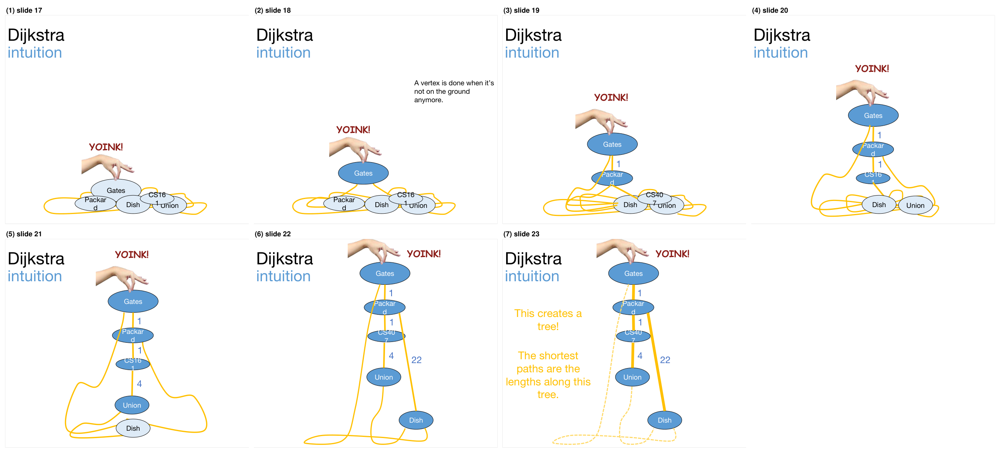
YOINK!는 낚아채는 동작을 나타내는 감탄사입니다. (2) Gates가 들려 올라가 진한 파랑이 됩니다. 오른쪽 글이 규칙을 정합니다 — 정점은 더 이상 바닥에 닿아 있지 않을 때 끝난 것입니다. (3) 손을 높이 1만큼 더 올리자 길이 1의 실이 팽팽해지며 Packard가 바닥을 떠납니다. (4) 다시 1만큼 더 올리자 Packard에 매달린 길이 1의 실을 따라 CS407이 떠오릅니다. (5) CS407에서 길이 4의 실로 Union이 떠오르고, (6) Packard에서 길이 22의 실로 Dish가 마지막으로 떠오릅니다. (7) 모든 정점이 공중에 뜨면 팽팽한 실(굵은 노란 선)만 남겨 보는데, 이것이 트리를 이루고 노란 글씨대로 최단 경로는 이 트리를 따라간 길이입니다. 끝까지 느슨하게 늘어진 두 실(노란 점선)은 Gates–Dish(25)와 Union–Dish(20)로, 어느 정점을 들어 올리는 데도 쓰이지 않았습니다. 원본 슬라이드에서 정점 이름이 CS161과 CS407로 섞여 있습니다.물리적인 비유로 시작합니다.
- 정점을 바닥에 놓인 공, 간선을 길이가 가중치와 같은 실이라고 생각합니다.
- 출발점 Gates를 집어 천천히 들어 올립니다.
- 정점은 바닥에서 떨어지는 순간 끝난 것입니다.
손을 들어 올리는 높이를 \(h\)라 하면, 어떤 정점 \(v\)가 바닥을 떠나는 것은 Gates에서 \(v\)까지 이어진 실들 가운데 가장 짧은 사슬이 팽팽해지는 순간, 곧 \(h = d(\text{Gates}, v)\)일 때입니다. 더 긴 사슬은 아직 느슨하기 때문입니다. 그래서 정점들은 Gates에서 가까운 순서대로 바닥을 떠납니다.
| 바닥을 떠나는 순서 | Gates | Packard | CS407 | Union | Dish |
|---|---|---|---|---|---|
| 떠나는 높이 | 0 | 1 | 2 | 6 | 23 |
| 끌어올린 실 | — | Gates–Packard | Packard–CS407 | CS407–Union | Packard–Dish |
- 모든 정점이 뜨고 나면, 팽팽한 실들이 트리를 만듭니다!
- 최단 경로는 이 트리를 따라간 길이입니다.
1.3 실제로는 어떻게 구현할까요 (How Do We Actually Implement This?)
- 실과 중력 없이 어떻게 할까요?
슬라이드는 중력에 휘어진 시공간 그림, 실타래, 그리고 손을 뻗은 여우원숭이 그림으로 이 질문을 던집니다. 컴퓨터에는 실도 중력도 없으므로, “다음에 바닥을 떠날 정점”을 계산으로 알아내야 합니다. 다음 예제가 그 방법입니다.
1.4 예제로 보는 다익스트라 (Dijkstra by Example)
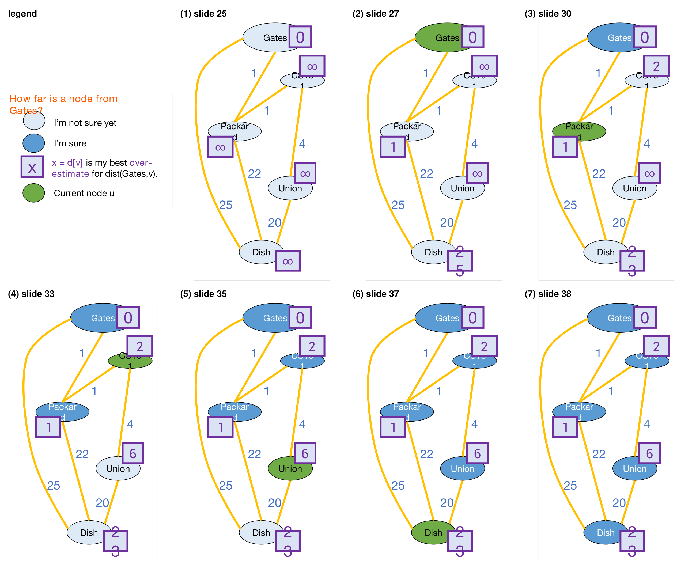
CS161)이 보라색 상자에 가려 있고, Dish의 23과 25는 두 자리 숫자가 상자 안에서 두 줄로 줄바꿈되어 있습니다.슬라이드는 각 정점에 기록하는 정보를 범례로 정합니다.
- 연한 파랑: 아직 확실하지 않음 (I’m not sure yet)
- 진한 파랑: 확실함 (I’m sure)
- 보라색 상자 \(x = d[v]\): Gates에서 \(v\)까지의 거리 \(\mathrm{dist}(\text{Gates}, v)\)에 대한 현재 최선의 과대추정값(over-estimate)
- 초록: 지금 처리 중인 현재 정점 \(u\)
초기화는 출발점이 아닌 모든 정점 \(v\)에 대해 \(d[v] = \infty\), 그리고 \(d[\text{Gates}] = 0\)입니다. 그다음 다음을 되풀이합니다.
- 미확정 정점 가운데 추정값 \(d[u]\)가 가장 작은 \(u\)를 고릅니다.
- \(u\)의 모든 이웃 \(v\)를 갱신합니다: \(d[v] = \min\bigl(d[v],\; d[u] + \mathrm{edgeWeight}(u,v)\bigr)\)
- \(u\)를 확정(sure)으로 표시합니다.
- 반복합니다.
모든 정점이 확정되면 모든 \(v\)에 대해 \(d(\text{Gates}, v) = d[v]\)라고 답합니다. 실행 과정을 표로 정리하면 다음과 같습니다. 굵은 글씨는 그 반복이 끝났을 때 확정된 값입니다.
| 반복 | 고른 \(u\) | Gates | Packard | CS407 | Union | Dish |
|---|---|---|---|---|---|---|
| 초기화 | — | 0 | \(\infty\) | \(\infty\) | \(\infty\) | \(\infty\) |
| 1 | Gates | 0 | 1 | \(\infty\) | \(\infty\) | 25 |
| 2 | Packard | 0 | 1 | 2 | \(\infty\) | 23 |
| 3 | CS407 | 0 | 1 | 2 | 6 | 23 |
| 4 | Union | 0 | 1 | 2 | 6 | 23 |
| 5 | Dish | 0 | 1 | 2 | 6 | 23 |
각 반복의 갱신을 풀어 쓰면 다음과 같습니다.
- 반복 1 (\(u\) = Gates, \(d[u] = 0\)): Packard \(\leftarrow \min(\infty, 0+1) = 1\), Dish \(\leftarrow \min(\infty, 0+25) = 25\)
- 반복 2 (\(u\) = Packard, \(d[u] = 1\)): 슬라이드는 “Packard는 이웃이 셋인데, 갱신하면 어떻게 될까요?”라고 묻습니다.
- CS407 \(\leftarrow \min(\infty, 1+1) = 2\)
- Dish \(\leftarrow \min(25, 1+22) = 23\) — 직통 간선보다 Packard를 거치는 길이 더 쌉니다.
- Gates \(\leftarrow \min(0, 1+1) = 0\) — 이미 확정된 이웃은 갱신해도 바뀌지 않습니다.
- 반복 3 (\(u\) = CS407, \(d[u] = 2\)): Union \(\leftarrow \min(\infty, 2+4) = 6\)
- 반복 4 (\(u\) = Union, \(d[u] = 6\)): Dish \(\leftarrow \min(23, 6+20) = 23\) — 변화가 없습니다.
- 반복 5 (\(u\) = Dish, \(d[u] = 23\)): 이웃은 모두 확정되어 있고 값도 바뀌지 않습니다.
정점이 확정되는 순서 Gates → Packard → CS407 → Union → Dish와 그때의 값 0, 1, 2, 6, 23은 §1.2에서 정점이 바닥을 떠난 순서와 높이와 정확히 같습니다. “미확정 정점 가운데 \(d[u]\)가 가장 작은 것을 고른다”는 규칙이 “다음에 바닥을 떠날 정점”을 계산으로 찾아내는 방법인 셈입니다.
1.5 다익스트라 알고리즘 (Dijkstra’s Algorithm)
예제의 규칙을 의사코드로 옮기면 다음과 같습니다.
Dijkstra(G, s):
Set all vertices to not-sure
d[v] = ∞ for all v in V
d[s] = 0
While there are not-sure nodes:
Pick the not-sure node u with the smallest estimate d[u]. # 가장 가까워 보이는 미확정 정점
For v in u.neighbors:
d[v] ← min( d[v], d[u] + edgeWeight(u,v) ) # u를 거쳐 가는 길이 더 싸면 낮춘다
Mark u as sure. # 이제 d[u]는 바뀌지 않는다
Now d(s, v) = d[v]- 슬라이드의 보라색 단서대로, 구현의 세부 사항은 많이 설명하지 않고 남겨 두었습니다. 특히 “가장 작은 \(d[u]\)를 고르는” 첫 줄을 어떻게 빨리 할지는 §1.9에서 다룹니다.
- 갱신 한 줄 \(d[v] \leftarrow \min(d[v], d[u] + w(u,v))\)을 교과서에서는 흔히 간선 \((u,v)\)의 완화(relaxation)라 부릅니다. 이 연산은 뒤의 벨만-포드에서도 그대로 쓰입니다.
1.6 늘 그렇듯 (As Usual)
새 알고리즘을 보면 늘 두 가지를 묻습니다.
- 제대로 동작하나요? — 예. (§1.7)
- 빠른가요? — 어떻게 구현하느냐에 달려 있습니다. (§1.9)
1.7 왜 동작할까요 (Why Does This Work?)
정리와 증명의 개요 (Theorem and Proof Outline)
슬라이드는 출발 정점 Gates를 \(s\)로 바꿔 부르고, 다음 정리를 세웁니다.
\(G = (V, E)\)에서 \(s\)를 출발점으로 다익스트라 알고리즘을 실행한다고 합시다. 알고리즘이 끝났을 때, 모든 정점 \(v\)에 대해 추정값 \(d[v]\)는 실제 거리 \(d(s,v)\)와 같습니다.
증명은 두 주장으로 나뉩니다.
- 주장 1 (Claim 1): 모든 \(v\)에 대해 \(d[v] \ge d(s,v)\).
- 주장 2 (Claim 2): 정점 \(v\)가 확정(sure)으로 표시될 때, \(d[v] = d(s,v)\).
두 주장이 정리를 함의합니다.
- \(v\)가 확정될 때 \(d[v] = d(s,v)\)입니다. (주장 2)
- \(d[v] \ge d(s,v)\)이고 \(d[v]\)는 절대 커지지 않으므로, \(v\)가 확정된 뒤에는 \(d[v]\)가 더 이상 바뀌지 않습니다. (주장 1과 알고리즘의 정의 — 갱신은 \(\min\)이므로 값을 키우는 일이 없습니다.)
- 따라서 \(v\)가 확정된 뒤의 어느 시점에서든 \(d[v] = d(s,v)\)입니다.
- 알고리즘이 끝나면 모든 정점이 확정되어 있으므로, 모든 정점이 \(d[v] = d(s,v)\)로 끝납니다.
이제 두 주장을 증명합니다.
주장 1 (Claim 1)
비형식적으로: \(d[v]\)를 갱신할 때마다 우리는 어떤 경로를 염두에 두고 있습니다.
\[ d[v] \;\leftarrow\; \min\bigl(\underbrace{d[v]}_{\text{전에 염두에 둔 경로}},\;\; \underbrace{d[u] + \mathrm{edgeWeight}(u,v)}_{u\text{까지의 경로} + \text{간선 }(u,v)}\bigr) \]
그러므로 \(d[v]\)는 늘 실제로 존재하는 어떤 경로의 길이이고, 어떤 경로의 길이도 최단 경로의 길이보다 작을 수 없습니다.
\[ d[v] \;=\; (\text{염두에 둔 경로의 길이}) \;\ge\; (\text{최단 경로의 길이}) \;=\; d(s,v) \]
형식적으로는 반복 횟수에 대한 귀납법으로 증명합니다. 슬라이드는 이를 건너뛴 장에 두었는데, 그 내용은 다음과 같습니다.
- 귀납 가정: 다익스트라의 반복을 \(t\)번 한 뒤, 모든 \(v\)에 대해 \(d[v] \ge d(s,v)\)이다.
- 기저 사례: 0번째 단계에서 \(d[s] = 0\)이고 \(d(s,s) = 0\)이며, 나머지 \(v\)는 \(d[v] = \infty \ge d(s,v)\)입니다.
- 귀납 단계: \(t\)에서 가정이 성립한다고 합시다. \(t+1\)번째 단계에서 \(u\)를 고르고 각 이웃 \(v\)에 대해 \(d[v] \leftarrow \min(d[v], d[u] + w(u,v))\)를 합니다. \(\min\)의 두 항이 모두 \(d(s,v)\) 이상임을 보이면 됩니다.
- 첫째 항은 귀납 가정에 의해 \(d(s,v) \le d[v]\)입니다.
- 둘째 항은 다음과 같습니다.
\[ d(s,v) \;\le\; d(s,u) + d(u,v) \;\le\; d[u] + w(u,v) \]
- 첫째 부등호는 \(s\)에서 \(u\)까지의 최단 경로 뒤에 \(u\)에서 \(v\)까지의 최단 경로를 이으면 \(s\)에서 \(v\)로 가는 경로가 되기 때문이고, 둘째 부등호는 귀납 가정을 \(u\)에 다시 쓴 \(d(s,u) \le d[u]\)와, 간선 \((u,v)\) 하나도 \(u\)에서 \(v\)로 가는 경로이므로 \(d(u,v) \le w(u,v)\)이기 때문입니다.
- 따라서 귀납 가정이 \(t+1\)에서도 성립하고, 주장 1이 따라 나옵니다.
귀납 단계 어디에도 가중치가 음이 아니라는 가정은 쓰이지 않았다는 점을 기억해 둡시다. 기저 사례도 \(d(s,s) = 0\) 대신 \(d[s] = 0 \ge d(s,s)\)만 있으면 충분하므로, 주장 1은 가중치의 부호와 무관하게 성립합니다.
주장 2의 직관 (Intuition for Claim 2)
- \(u\)를 바닥에서 처음 들어 올리는 경로가 가장 짧은 경로입니다.
- 증명해 봅시다! — 적어도 증명의 개요를 봅시다.
슬라이드는 §1.2의 그림 가운데 Union이 막 떠오른 장면을 다시 띄우고, Gates에 \(s\), Union에 \(u\)라는 이름을 붙여 둡니다. Union을 끌어올린 사슬 Gates–Packard–CS407–Union이 곧 최단 경로라는 뜻입니다.
주장 2 (Claim 2)
슬라이드가 비형식적인 개요(Informal outline)라고 밝힌 증명입니다.
- 귀납 가정: \(t\)번째 정점 \(v\)를 확정할 때, \(d[v] = \mathrm{dist}(s,v)\)이다.
- 기저 사례 (\(t = 1\)): 처음 확정되는 정점은 \(s\)이고, \(d[s] = d(s,s) = 0\)입니다. 붉은 단서대로 가중치가 음이 아니라고 가정합니다.
- 귀납 단계:
- 이미 확정된 모든 \(v\)가 \(d[v] = d(s,v)\)를 만족한다고 귀납적으로 가정합니다.
- 이제 \(u\)를 확정 목록에 넣으려 한다고 합시다. 곧, 반복의 첫 줄에서 미확정 정점 가운데 \(d[u]\)가 가장 작은 \(u\)를 막 고른 상황입니다.
- \(d[u] = d(s,u)\)임을 보이고 싶습니다.
슬라이드는 증명 동안만 쓸 임시 정의를 하나 둡니다 — \(d[v] = d(s,v)\)인 정점 \(v\)를 “좋다(good)”고 부릅니다. 보이고 싶은 것은 \(u\)가 좋다는 것입니다.
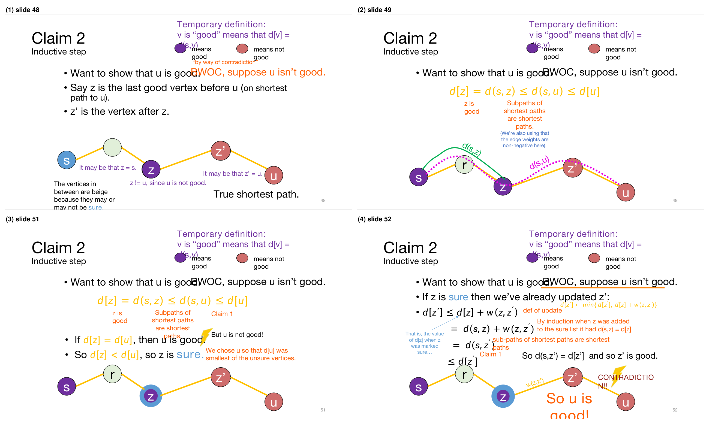
귀류법(by way of contradiction, BWOC)으로, \(u\)가 좋지 않다고 가정합니다.
① 설정. \(s\)에서 \(u\)까지의 실제 최단 경로 하나를 생각합니다. 이 경로는 머릿속에서만 생각하는 사고 실험입니다 — 알고리즘이 이 경로를 아는 것은 아닙니다.
- \(s\)는 좋습니다. 따라서 경로 위에서 \(u\)보다 앞에 있는 마지막 좋은 정점 \(z\)가 존재합니다. (\(z = s\)일 수도 있습니다.)
- \(u\)는 좋지 않으므로 \(z \ne u\)입니다.
- \(z'\)을 경로에서 \(z\) 바로 다음 정점이라 합시다. (\(z' = u\)일 수도 있습니다.) \(z\)가 마지막 좋은 정점이므로 \(z'\)은 좋지 않습니다.
② 부등식 사슬.
\[ d[z] \;\overset{(a)}{=}\; d(s,z) \;\overset{(b)}{\le}\; d(s,u) \;\overset{(c)}{\le}\; d[u] \]
- \(z\)가 좋기 때문입니다.
- 최단 경로의 부분 경로는 최단 경로이므로 \(d(s,u) = d(s,z) + (z\text{부터 }u\text{까지 부분의 비용})\)이고, 가중치가 음이 아니므로 뒤의 항이 0 이상입니다.
- 주장 1입니다.
③ \(z\)는 이미 확정되어 있습니다. 만약 \(d[z] = d[u]\)라면 사슬의 모든 부등호가 등호가 되어 \(d(s,u) = d[u]\), 곧 \(u\)가 좋아집니다. 그런데 \(u\)는 좋지 않다고 가정했으므로 모순입니다. 따라서 \(d[z] < d[u]\)입니다. 그런데 \(u\)는 미확정 정점 가운데 \(d[u]\)가 가장 작은 것으로 골랐으므로, \(d[u]\)보다 작은 \(d[z]\)를 가진 \(z\)는 미확정일 수 없습니다. \(z\)는 확정되어 있습니다.
④ \(z'\)도 좋습니다. \(z\)가 확정될 때 그 이웃인 \(z'\)을 이미 갱신했습니다(\(d[z'] \leftarrow \min\{d[z'],\, d[z] + w(z,z')\}\)). 그때 이후 \(d[z']\)는 커지지 않았으므로 다음이 성립합니다.
\[ \begin{aligned} d[z'] &\le d[z] + w(z,z') && \text{갱신의 정의} \\ &= d(s,z) + w(z,z') && \text{귀납 가정: } z\text{가 확정될 때 } d[z] = d(s,z) \\ &= d(s,z') && \text{최단 경로의 부분 경로는 최단 경로} \\ &\le d[z'] && \text{주장 1} \end{aligned} \]
여기서 \(d[z]\)는 \(z\)가 확정될 때의 값입니다. 양 끝이 같으므로 \(d(s,z') = d[z']\), 곧 \(z'\)은 좋습니다. 그런데 \(z'\)은 마지막 좋은 정점 \(z\)보다 뒤에 있으므로 좋지 않아야 합니다. 모순입니다!
따라서 처음의 가정이 틀렸고, \(u\)는 좋습니다. 이것으로 귀납 단계가 끝나고 주장 2가 성립합니다. 슬라이드는 정리 슬라이드로 돌아가 주장 1과 2가 정리를 함의한다는 것에 확인 표시를 합니다. \(\blacksquare\)
주장 1은 가중치의 부호와 무관하지만, 주장 2는 두 군데에서 가중치가 음이 아니라는 가정을 씁니다 — 기저 사례의 \(d(s,s) = 0\)과, ②의 (b) \(d(s,z) \le d(s,u)\)입니다. 특히 (b)는 “경로를 더 따라가면 비용이 줄지 않는다”는 뜻인데, 음수 간선이 있으면 뒤에서 비용이 줄어들 수 있습니다. 그러면 \(u\)보다 멀어 보이는 \(z\)를 거쳐 \(u\)에 더 싸게 닿는 길이 생기고, 다익스트라는 그 길을 보기 전에 \(u\)를 확정해 버립니다. §2.10에서 슬라이드의 음수 간선 그래프로 이 실패를 직접 확인합니다.
1.8 무엇을 배웠나 (What Have We Learned?)
- 다익스트라 알고리즘은 음이 아닌 가중치를 가진 가중 그래프에서 최단 경로를 찾습니다.
- 그 과정에서 멋진 트리를 하나 만듭니다.
- 이 트리를 Gates 건물에 붙여 둘 수도 있겠습니다!
- 그러면 사람들이 어디든 빨리 가는 법을 알 수 있습니다.
슬라이드가 그린 트리는 §1.2의 마지막 장면과 같습니다 — Gates–Packard(1), Packard–CS407(1), CS407–Union(4), Packard–Dish(22). 실제 구현에서 이 트리를 얻으려면, BFS 트리 때와 마찬가지로 \(d[v]\)가 \(d[u] + w(u,v)\)로 낮아질 때마다 \(u\)를 \(v\)의 부모로 적어 두면 됩니다. 알고리즘이 끝난 뒤 목적지에서 부모를 따라 \(s\)까지 거슬러 올라가면 그 경로가 최단 경로입니다.
1.9 수행 시간 (Running Time?)
- \(n\)번 반복합니다 (정점 하나당 한 번).
- 한 번의 반복은 얼마나 걸릴까요? — 어떻게 구현하느냐에 달려 있습니다.
필요한 자료구조 (We Need a Data Structure That:)
반복 한 번(안쪽 루프)이 하는 일은 “미확정 정점 가운데 \(d[u]\)가 가장 작은 \(u\)를 고르고, \(u\)의 이웃을 갱신하고, \(u\)를 확정하는 것”입니다. 이를 위해 다음을 지원하는 자료구조가 필요합니다.
- 미확정 정점 \(v\)들을 저장합니다.
- \(d[v]\)를 관리합니다.
- \(d[u]\)가 최소인 \(u\)를 찾을 수 있습니다 —
findMin() - 그 \(u\)를 제거할 수 있습니다 —
removeMin(u) - \(d[v]\)를 갱신(감소)할 수 있습니다 —
updateKey(v, d)
그러면 전체 수행 시간은 다음의 빅오입니다.
\[ \begin{aligned} &\sum_{u \in V} \Bigl( T(\texttt{findMin}) + \sum_{v \in u.\text{neighbors}} T(\texttt{updateKey}) + T(\texttt{removeMin}) \Bigr) \\ &\qquad = n\bigl( T(\texttt{findMin}) + T(\texttt{removeMin}) \bigr) + m\, T(\texttt{updateKey}) \end{aligned} \]
등호가 성립하는 이유는 바깥 합이 정점마다 한 번씩 \(n\)번 돌고, 안쪽 합을 모든 \(u\)에 대해 더하면 진출 차수의 합, 곧 간선의 수 \(m\)이 되기 때문입니다. 9강의 \(\sum \deg(v) = 2m\)과 같은 계산을 방향 그래프에 한 것입니다.
배열을 쓰면 (If We Use an Array)
- \(T(\texttt{findMin}) = O(n)\)
- \(T(\texttt{removeMin}) = O(n)\)
- \(T(\texttt{updateKey}) = O(1)\)
\[ \begin{aligned} &O\bigl(n(T(\texttt{findMin}) + T(\texttt{removeMin})) + m\,T(\texttt{updateKey})\bigr) \\ &\qquad = O(n^2) + O(m) = O(n^2) \end{aligned} \]
배열에서는 정점 번호로 \(d[v]\)를 바로 찾아 고칠 수 있으므로 갱신은 \(O(1)\)이지만, 최솟값을 찾으려면 배열 전체를 훑어야 합니다. 마지막 등호는 단순한 방향 그래프에서 간선이 많아야 \(n(n-1)\)개라서 \(m = O(n^2)\)이기 때문입니다.
레드-블랙 트리를 쓰면 (If We Use a Red-Black Tree)
- \(T(\texttt{findMin}) = O(\log n)\)
- \(T(\texttt{removeMin}) = O(\log n)\)
- \(T(\texttt{updateKey}) = O(\log n)\)
\[ \begin{aligned} &O\bigl(n(T(\texttt{findMin}) + T(\texttt{removeMin})) + m\,T(\texttt{updateKey})\bigr) \\ &\qquad = O(n\log n) + O(m\log n) = O((n+m)\log n) \end{aligned} \]
- 그래프가 희소(sparse)하면, 곧 \(m\)이 \(n^2\)보다 훨씬 작으면 배열보다 낫습니다.
7강의 레드-블랙 트리에 \(d[v]\)를 키로 정점들을 넣어 두면, 가장 왼쪽 노드가 최솟값이고 트리의 높이가 \(O(\log n)\)이므로 세 연산이 모두 \(O(\log n)\)입니다. 키 갱신은 그 정점을 지웠다가 새 키로 다시 넣는 것으로 할 수 있습니다. 거꾸로 \(m\)이 \(n^2\)에 가까운 조밀한(dense) 그래프에서는 \((n+m)\log n = \Theta(n^2 \log n)\)이 되어 배열의 \(O(n^2)\)보다 나빠집니다.
해시 테이블은 좋은 생각일까요 (Is a Hash Table a Good Idea Here?)
- 별로 그렇지 않습니다.
Search(v)는 (기댓값으로) 빠릅니다.- 하지만 구조를 더하지 않으면
findMin()이 여전히 \(O(n)\) 시간 걸립니다.
8강의 해시 테이블은 키를 흩어 놓는 것이 목적이어서 키 사이의 순서를 전혀 기억하지 않습니다. 다익스트라에 필요한 것은 “가장 작은 것”을 빨리 찾는 일이므로, 해시 테이블의 장점이 여기서는 쓸모가 없습니다.
힙은 이 연산들을 지원합니다 (Heaps Support These Operations)
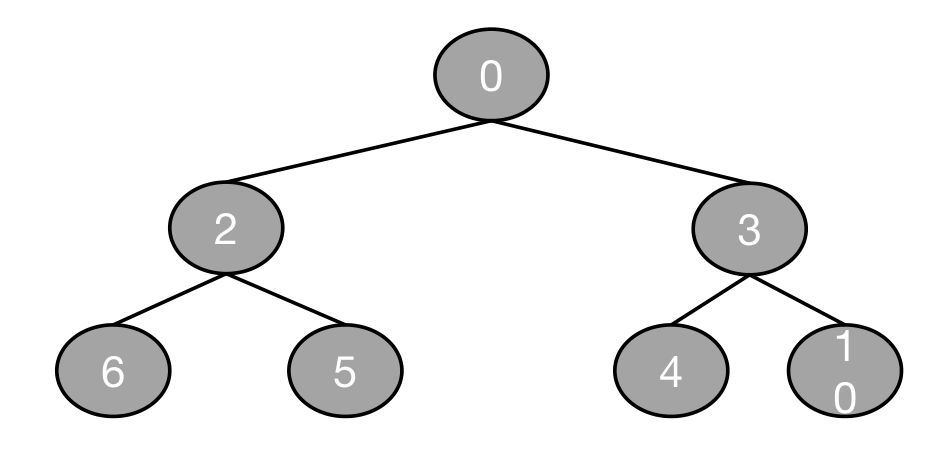
- 힙(heap)은
findMin,removeMin,updateKey를 지원합니다. - 힙은 모든 노드의 키가 자식들의 키보다 작다는 성질을 가진 트리 기반 자료구조입니다.
- 이 수업에서는 다루지 않습니다.
- 하지만! 쓰기는 할 것입니다.
여러 가지 힙 구현 (Many Heap Implementations)
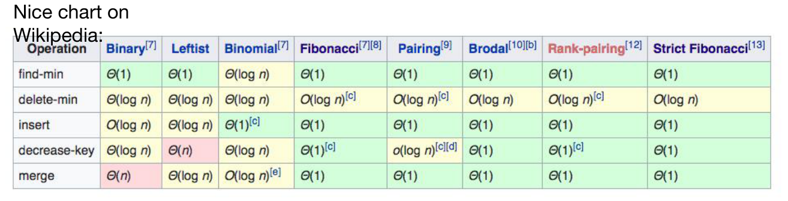
슬라이드는 위키백과의 비교표를 소개합니다. 행과 열을 바꿔 옮기면 다음과 같습니다(각주 표시는 생략했습니다).
| 힙 | find-min | delete-min | insert | decrease-key | merge |
|---|---|---|---|---|---|
| Binary | \(\Theta(1)\) | \(\Theta(\log n)\) | \(O(\log n)\) | \(\Theta(\log n)\) | \(\Theta(n)\) |
| Leftist | \(\Theta(1)\) | \(\Theta(\log n)\) | \(\Theta(\log n)\) | \(\Theta(n)\) | \(\Theta(\log n)\) |
| Binomial | \(\Theta(\log n)\) | \(\Theta(\log n)\) | \(\Theta(1)\) | \(\Theta(\log n)\) | \(O(\log n)\) |
| Fibonacci | \(\Theta(1)\) | \(O(\log n)\) | \(\Theta(1)\) | \(\Theta(1)\) | \(\Theta(1)\) |
| Pairing | \(\Theta(1)\) | \(O(\log n)\) | \(\Theta(1)\) | \(o(\log n)\) | \(\Theta(1)\) |
| Brodal | \(\Theta(1)\) | \(O(\log n)\) | \(\Theta(1)\) | \(\Theta(1)\) | \(\Theta(1)\) |
| Rank-pairing | \(\Theta(1)\) | \(O(\log n)\) | \(\Theta(1)\) | \(\Theta(1)\) | \(\Theta(1)\) |
| Strict Fibonacci | \(\Theta(1)\) | \(O(\log n)\) | \(\Theta(1)\) | \(\Theta(1)\) | \(\Theta(1)\) |
표의 이름으로 delete-min이 removeMin, decrease-key가 updateKey에 해당합니다. 예를 들어 이진 힙(binary heap)을 쓰면 세 연산이 모두 \(O(\log n)\) 이하이므로 다익스트라의 수행 시간은 레드-블랙 트리와 같은 \(O((n+m)\log n)\)이 됩니다.
피보나치 힙을 쓴다고 합시다 (Say We Use a Fibonacci Heap)
- \(T(\texttt{findMin}) = O(1)\) (분할상환 시간*)
- \(T(\texttt{removeMin}) = O(\log n)\) (분할상환 시간*)
- \(T(\texttt{updateKey}) = O(1)\) (분할상환 시간*)
- 더 자세한 것은 자료구조 과목을 보라고 합니다!
\[ \begin{aligned} &O\bigl(n(T(\texttt{findMin}) + T(\texttt{removeMin})) + m\,T(\texttt{updateKey})\bigr) \\ &\qquad = O(n\log n + m) \quad (\text{분할상환 시간}) \end{aligned} \]
슬라이드의 각주(*)는 분할상환 시간(amortized time)을 이렇게 설명합니다 — removeMin을 \(d\)번 연달아 호출하면 전부 합쳐 많아야 \(O(d\log n)\) 시간이 걸립니다. 다만 \(d\)번 가운데 몇 번은 \(O(\log n)\)보다 오래 걸릴 수 있고, 몇 번은 더 짧게 걸릴 수 있습니다.
다익스트라 전체에서 removeMin은 정확히 \(n\)번, updateKey는 많아야 \(m\)번 불리고, 우리가 관심 있는 것은 그 합뿐입니다. 그래서 한 번 한 번의 최악 시간이 아니라 분할상환 시간으로 분석해도 전체 수행 시간에 대한 보장으로 충분합니다.
세 구현을 한데 모으면 다음과 같습니다.
| 자료구조 | findMin |
removeMin |
updateKey |
다익스트라 전체 |
|---|---|---|---|---|
| 배열 | \(O(n)\) | \(O(n)\) | \(O(1)\) | \(O(n^2)\) |
| 레드-블랙 트리 | \(O(\log n)\) | \(O(\log n)\) | \(O(\log n)\) | \(O((n+m)\log n)\) |
| 피보나치 힙 | \(O(1)\)* | \(O(\log n)\)* | \(O(1)\)* | \(O(n\log n + m)\)* |
(*는 분할상환 시간입니다.)
1.10 실제로는 (In Practice)
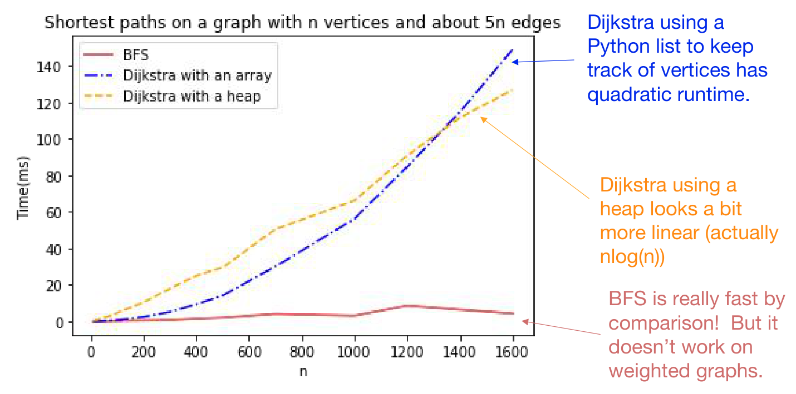
- 정점들을 파이썬 리스트로 관리하는 다익스트라는 이차 시간이 걸립니다.
- 힙을 쓰는 다익스트라는 조금 더 선형에 가까워 보입니다(실제로는 \(n\log n\)).
- BFS는 비교할 수 없을 만큼 빠릅니다! 하지만 가중 그래프에서는 동작하지 않습니다.
실험의 그래프는 \(m \approx 5n\)인 희소 그래프이므로, 이론대로라면 배열 구현은 \(O(n^2)\), 힙 구현은 \(O((n+m)\log n) = O(n\log n)\)입니다. 그림에서 흥미로운 점은 \(n\)이 1,400 근처보다 작을 때는 오히려 힙 구현이 더 느리다는 것입니다. 점근적 우위는 상수 계수를 넘어설 만큼 \(n\)이 커져야 드러나며, 두 곡선이 엇갈린 뒤로는 배열 구현이 이차 곡선을 따라 빠르게 멀어집니다.
1.11 다익스트라는 실제로 쓰입니다 (Dijkstra Is Used in Practice)
- 예: IP 네트워크의 라우팅 프로토콜인 OSPF(Open Shortest Path First)가 다익스트라를 씁니다.
슬라이드는 라우터 다섯 대가 서로 이어진 그림을 곁들이고, 파란 글씨로 덧붙입니다 — 하지만 다익스트라가 그리 잘하지 못하는 것들도 있습니다.
다익스트라의 단점 (Dijkstra Drawbacks)
- 음이 아닌 간선 가중치가 필요합니다.
- 가중치가 바뀌면 전체를 다시 돌려야 합니다.
- OSPF에서는 정점이 네트워크의 변화를 전체에 알리고(broadcast), 그러면 모든 정점이 다익스트라를 처음부터 다시 실행합니다.
두 단점은 §1.7의 증명과 여담(Aside)에서 본 어려움에 각각 닿아 있습니다. 첫째는 주장 2가 음이 아닌 가중치를 썼기 때문이고, 둘째는 “비용이 바뀔 수 있다”는 어려움에 다익스트라가 잘 대응하지 못한다는 뜻입니다.
Part 2. 벨만-포드 알고리즘 (Bellman-Ford!)
2.1 벨만-포드 알고리즘 (Bellman-Ford Algorithm)
- (−) 다익스트라 알고리즘보다 느립니다.
- (+) 음수 간선 가중치를 다룰 수 있습니다.
- 어떤 간선이 비용이 드는 것이 아니라 적극적으로 타는 것이 좋다고 말하고 싶을 때 쓸모 있습니다.
- 다른 알고리즘의 구성 요소(building block)로 쓸모 있습니다.
- (+) 가중치가 바뀔 때 어느 정도 유연하게 대응합니다.
- 이것이 무슨 뜻인지는 나중에 봅니다. (§2.8, §2.15)
2.2 오늘은 벨만-포드 맛보기 (Today: Intro to Bellman-Ford)
- 예제를 통한 정의를 봅니다.
- 다음 강의에서 더 엄밀하게 다시 다룹니다.
- 오늘 빨리 지나가도 걱정하지 마세요.
- 의사코드가 있는 슬라이드 몇 장은 건너뛰지만, 다음 강의에서 다시 봅니다.
- 기본 아이디어: \(d[u]\)가 가장 작은 \(u\)를 골라 갱신하는 대신, 모든 \(u\)를 한꺼번에 갱신합니다.
2.3 의사코드 (Bellman-Ford Algorithm)
Bellman-Ford(G, s):
d[v] = ∞ for all v in V
d[s] = 0
For i = 0, ..., n-1:
For u in V: # u를 영리하게 고르는 대신, 모든 u에 대해 갱신
For v in u.neighbors:
d[v] ← min( d[v], d[u] + edgeWeight(u,v) )다익스트라의 안쪽 루프와 나란히 놓으면 차이가 분명해집니다.
While there are not-sure nodes:
Pick the not-sure node u with the smallest estimate d[u].
For v in u.neighbors:
d[v] ← min( d[v], d[u] + edgeWeight(u,v) )
Mark u as sure.- 갱신 한 줄은 똑같습니다. 다른 것은 어느 간선을 언제 갱신하느냐입니다.
- 다익스트라는 정점 \(u\)를 영리하게 하나씩 골라 그 이웃만 갱신하고, 한 번 확정한 정점은 다시 고르지 않습니다.
- 벨만-포드는 고르지 않습니다. 한 라운드마다 모든 \(u\)의 모든 이웃, 곧 모든 간선을 한 번씩 갱신하고, 이를 정해진 횟수만큼 되풀이합니다. 확정이라는 개념도 없습니다.
2.4 교육적인 이유로 (For Pedagogical Reasons)
슬라이드는 다음 강의에서 밝힐 교육적인 이유로 알고리즘을 일부러 덜 영리하게 바꿉니다.
- 배열을 \(n\)개 둡니다: \(d^{(0)}, d^{(1)}, \ldots, d^{(n-1)}\)
Bellman-Ford*(G, s):
d(i)[v] = ∞ for all v in V, for all i = 0, ..., n-1
d(0)[s] = 0
For i = 0, ..., n-2:
For u in V:
For v in u.neighbors:
d(i+1)[v] ← min( d(i)[v], d(i+1)[v], d(i)[u] + edgeWeight(u,v) )
Then dist(s, v) = d(n-1)[v]- 원래의 벨만-포드 알고리즘과 조금 다르지만, 분석은 기본적으로 같습니다.
갱신식의 세 항은 각각 뜻이 있습니다.
| 항 | 뜻 |
|---|---|
| \(d^{(i)}[v]\) | 앞 라운드까지 찾아 둔 \(v\)의 값을 그대로 물려받습니다. |
| \(d^{(i+1)}[v]\) | 이번 라운드에서 다른 \(u\)를 통해 이미 낮춰 둔 값입니다. \(v\)로 들어오는 간선이 여럿이므로, 그 가운데 최소를 모읍니다. |
| \(d^{(i)}[u] + w(u,v)\) | 앞 라운드의 \(u\) 값에 간선 \((u,v)\)를 하나 붙인 후보입니다. |
“덜 영리하다”는 것은 오른쪽 변이 앞 라운드의 값 \(d^{(i)}\)만 읽는다는 뜻입니다. 원래 버전은 배열이 하나뿐이라 같은 라운드 안에서 방금 낮춘 \(d[u]\)가 곧바로 다른 갱신에 쓰일 수 있고, 그래서 갱신 순서에 따라 한 라운드에 여러 간선만큼 정보가 퍼지기도 합니다. 별표 버전에서는 한 라운드에 정확히 간선 하나만큼 정보가 퍼지므로, 뒤의 귀납 가정 “\(d^{(i)}[v]\)는 간선 \(i\)개 이하 경로의 최소 비용”이 등호로 깔끔하게 성립합니다.
2.5 예제로 보는 벨만-포드 (Bellman-Ford)
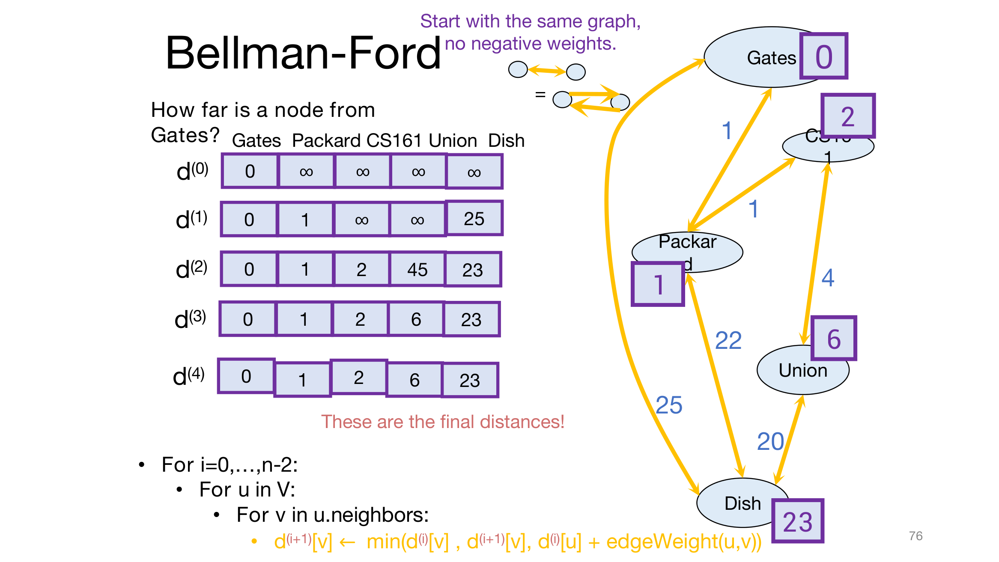
슬라이드는 음수 가중치가 없는 같은 그래프로 시작합니다. 방향 없는 간선은 서로 반대 방향의 두 간선으로 봅니다. 정점이 \(n = 5\)개이므로 배열은 \(d^{(0)}\)부터 \(d^{(4)}\)까지입니다.
| Gates | Packard | CS407 | Union | Dish | |
|---|---|---|---|---|---|
| \(d^{(0)}\) | 0 | \(\infty\) | \(\infty\) | \(\infty\) | \(\infty\) |
| \(d^{(1)}\) | 0 | 1 | \(\infty\) | \(\infty\) | 25 |
| \(d^{(2)}\) | 0 | 1 | 2 | 45 | 23 |
| \(d^{(3)}\) | 0 | 1 | 2 | 6 | 23 |
| \(d^{(4)}\) | 0 | 1 | 2 | 6 | 23 |
- \(d^{(1)}\): \(d^{(0)}\)에서 값이 유한한 정점은 Gates뿐이므로, Gates의 이웃만 바뀝니다 — Packard \(0+1 = 1\), Dish \(0+25 = 25\).
- \(d^{(2)}\): CS407 \(= d^{(1)}[\text{Packard}] + 1 = 2\), Dish \(= \min(25,\, 1+22) = 23\), 그리고 Union \(= d^{(1)}[\text{Dish}] + 20 = 25 + 20 = 45\)입니다. Union의 45는 최종 답이 아닙니다. 지금까지는 간선 두 개짜리 경로 Gates → Dish → Union만 볼 수 있었기 때문입니다.
- \(d^{(3)}\): Union \(= \min(45,\, d^{(2)}[\text{CS407}] + 4) = \min(45, 6) = 6\). 간선 세 개짜리 경로 Gates → Packard → CS407 → Union이 비로소 보입니다.
- \(d^{(4)}\): 아무것도 바뀌지 않습니다. 슬라이드의 붉은 글씨대로 이것이 최종 거리입니다!
2.6 늘 그렇듯 (As Usual)
- 제대로 동작하나요? — 예. 아이디어는 오른쪽에 있습니다(자세한 것은 숨겨진 슬라이드에 있습니다).
- 빠른가요? — 별로 그렇지 않습니다…
슬라이드가 표 옆에 적은 아이디어는 다음과 같습니다.
- 귀납법으로 증명합니다.
- 귀납 가정: \(d^{(i)}[v]\)는 \(s\)와 \(v\) 사이의 경로 가운데 간선이 \(i\)개 이하인 것의 최소 비용과 같다.
- 결론: \(d^{(n-1)}[v]\)는 \(s\)와 \(v\) 사이의 최단 단순 경로의 비용과 같다. 모든 단순 경로는 간선이 많아야 \(n-1\)개이기 때문입니다.
- 노란 글씨가 용어를 정합니다 — 단순 경로(simple path)는 순환이 없는 경로입니다.
앞의 표가 이 가정을 그대로 보여 줍니다. \(d^{(2)}[\text{Union}] = 45\)는 간선 두 개 이하로 Union에 가는 가장 싼 길이고, \(d^{(3)}[\text{Union}] = 6\)은 간선 세 개 이하로 가는 가장 싼 길입니다. 단순 경로가 정점을 많아야 \(n\)개 지나므로 간선은 많아야 \(n-1\)개라는 것이 마지막 단계의 열쇠입니다.
2.7 귀납법에 의한 증명 (Proof by Induction)
\(i\)번째 반복이 끝난 뒤, 모든 \(v\)에 대해 \(d^{(i)}[v]\)는 \(s\)와 \(v\) 사이의 경로 가운데 간선이 \(i\)개 이하인 것의 최소 비용과 같습니다. 그런 경로가 없으면 \(\infty\)입니다.
- 기저 사례: 0번째 반복 뒤입니다. 간선이 0개인 경로는 \(s\)에서 \(s\)로 가는 빈 경로뿐이므로, 최소 비용은 \(s\)에서 0이고 나머지 정점에서는 \(\infty\)입니다. 이는 초기화 \(d^{(0)}[s] = 0\), \(d^{(0)}[v] = \infty\)와 정확히 같습니다. ✓
- 귀납 단계: 아래에서 봅니다. ✓
- 결론: \(n-1\)번째 반복 뒤, 모든 \(v\)에 대해 \(d[v]\)는 \(s\)와 \(v\) 사이의 경로 가운데 간선이 \(n-1\)개 이하인 것의 최소 비용과 같습니다.
- 곧, 음수 순환이 없는 한 모든 \(v\)에 대해 \(d[v] = d(s,v)\)입니다. ✓
귀납 단계 (Inductive Step)
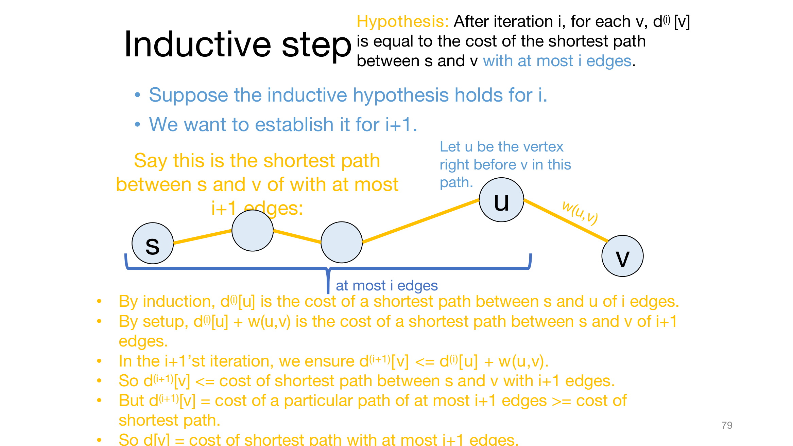
- \(i\)에서 귀납 가정이 성립한다고 하고, \(i+1\)에서 성립함을 보입니다.
- \(P\)를 \(s\)와 \(v\) 사이의 경로 가운데 간선이 \(i+1\)개 이하인 최단 경로라 하고, \(u\)를 \(P\)에서 \(v\) 바로 앞의 정점이라 합시다. \(P\)의 \(s\)부터 \(u\)까지 부분은 간선이 \(i\)개 이하입니다.
- 귀납 가정에 의해, \(d^{(i)}[u]\)는 \(s\)와 \(u\) 사이의 간선 \(i\)개 이하 경로의 최소 비용입니다.
- 구성에 의해, \(d^{(i)}[u] + w(u,v)\)는 \(s\)와 \(v\) 사이의 간선 \(i+1\)개 이하 경로의 최소 비용입니다. (\(P\)의 앞부분이 간선 \(i\)개 이하 경로 가운데 가장 싼 것이 아니라면, 그것으로 바꿔 \(P\)보다 싼 경로를 만들 수 있기 때문입니다 — 워밍업과 같은 논리입니다.)
- \(i+1\)번째 반복은 \(d^{(i+1)}[v] \le d^{(i)}[u] + w(u,v)\)가 되게 만듭니다.
- 그러므로 \(d^{(i+1)}[v] \le\) (간선 \(i+1\)개 이하인 최단 경로의 비용)입니다.
- 그런데 \(d^{(i+1)}[v]\)는 간선 \(i+1\)개 이하인 어떤 특정 경로의 비용이므로, 최단 경로의 비용 이상입니다.
- 따라서 \(d^{(i+1)}[v]\)는 간선 \(i+1\)개 이하인 최단 경로의 비용과 같습니다.
슬라이드가 넘어간 두 경우를 채워 두겠습니다.
- \(P\)의 간선이 \(i\)개 이하이거나 \(v = s\)인 경우: 이때는 \(P\) 자체가 간선 \(i\)개 이하 경로이므로 귀납 가정에 의해 \(d^{(i)}[v] = \mathrm{cost}(P)\)이고, 갱신식의 첫 항 \(d^{(i)}[v]\) 덕분에 \(d^{(i+1)}[v] \le \mathrm{cost}(P)\)입니다. 나머지 논증은 같습니다.
- 간선 \(i+1\)개 이하 경로가 아예 없는 경우: 갱신식에 들어가는 유한한 값은 모두 실제 경로의 비용이므로 \(d^{(i+1)}[v]\)는 \(\infty\)로 남고, 이는 최소 비용 \(\infty\)와 같습니다.
결론의 마지막 단계 — “간선 \(n-1\)개 이하 경로의 최소 비용이 곧 \(d(s,v)\)” — 도 풀어 두겠습니다. 음수 순환이 없으면 모든 순환의 비용이 0 이상이므로, 순환을 포함한 경로에서 그 순환을 잘라 내도 비용이 커지지 않습니다. 따라서 최단 경로 가운데 단순 경로인 것이 항상 있고, 단순 경로는 간선이 많아야 \(n-1\)개이므로 \(d^{(n-1)}[v] = d(s,v)\)입니다.
다익스트라의 주장 2는 “경로를 더 따라가면 비용이 줄지 않는다”는 가정 위에서 어느 정점을 언제 확정할지를 정했습니다. 벨만-포드의 귀납 증명에는 그런 단계가 없습니다. 쓰인 것은 “마지막 간선을 떼면 간선 \(i\)개 이하 경로가 남는다”는 경로의 구조와 “갱신값은 실제 경로의 비용”이라는 사실뿐이고, 둘 다 가중치의 부호와 무관합니다. 부호가 문제가 되는 곳은 마지막 단계 하나 — 단순 경로만 보면 충분하다 — 이며, 거기에 필요한 조건은 “음수 간선이 없다”가 아니라 “음수 순환이 없다”입니다.
2.8 벨만-포드의 장단점 (Pros and Cons of Bellman-Ford)
- 수행 시간: \(O(mn)\)
- \(n\)번의 단계마다 \(m\)개의 간선을 갱신합니다.
- 다익스트라보다 느립니다.
- 하지만 몇 가지 면에서 더 유연합니다.
- 음수 간선을 다룰 수 있습니다.
- 이 반복을 계속 돌리면, 네트워크의 어떤 변화든 결국 전체로 퍼져 나갑니다.
한 라운드는 모든 정점을 훑으며(\(O(n)\)) 모든 간선을 한 번씩 갱신하므로(\(O(m)\)) \(O(n+m)\)이고, 이를 \(n\)번 하므로 정확히는 \(O(n(n+m))\)입니다. 모든 정점이 \(s\)에서 도달 가능하면 \(m \ge n-1\)이므로 이는 \(O(nm)\)과 같습니다. 두 번째 장점은 여담(Aside)의 “비용이 바뀔 수 있다”에 대한 답입니다. 다익스트라는 비용이 바뀌면 처음부터 다시 돌려야 했지만, 벨만-포드는 같은 갱신을 계속 되풀이하는 것이 알고리즘 그 자체이므로, 바뀐 비용을 다음 라운드부터 그냥 반영하면 됩니다.
2.9 잠깐만요: 음수 간선 가중치? (Wait a Second… / Negative Edge Weights?)
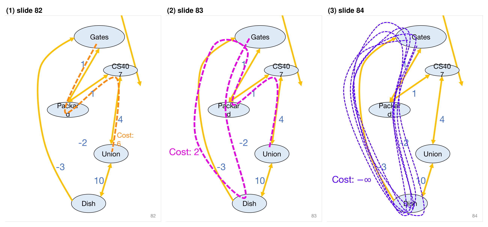
슬라이드는 음수 간선이 있는 그래프에서 Gates에서 Union까지의 최단 경로는?을 세 번 묻습니다.
| 경로 | 비용 |
|---|---|
| Gates → Packard → CS407 → Union | \(1 + 1 + 4 = 6\) |
| Gates → Packard → Dish → Gates → Packard → CS407 → Union | \(1 - 2 - 3 + 1 + 1 + 4 = 2\) |
| 순환 Gates → Packard → Dish → Gates를 \(k\)바퀴 돈 뒤 Union으로 | \(6 - 4k \;\to\; -\infty\) |
- 순환 Gates → Packard → Dish → Gates의 비용은 \(1 + (-2) + (-3) = -4\)입니다. 한 바퀴 돌 때마다 비용이 4씩 줄어듭니다.
- 그러므로 음수 순환이 있으면 최단 경로가 정의되지 않습니다!
벨만-포드와 음수 간선 가중치 (Bellman-Ford and Negative Edge Weights)
- 벨만-포드는 음수 간선 가중치에서도 동작합니다… 음수 순환이 없는 한.
- 음수 순환(negative cycle)은 시작 정점과 끝 정점이 같고 비용이 음수인 경로입니다.
- 하지만 벨만-포드는 음수 순환을 감지할 수 있습니다.
정당성으로 돌아가서 (Back to the Correctness)
슬라이드는 §2.6의 표와 아이디어를 다시 띄우고, 결론 줄에 화살표를 그어 짚습니다.
- 음수 순환이 있으면, 단순하지 않은 경로가 중요해집니다!
- 그래서 음수 순환이 있으면 증명이 깨집니다.
귀납 가정 자체는 여전히 참입니다. 깨지는 곳은 “단순 경로만 보면 충분하다”는 마지막 단계입니다. 음수 순환이 있으면 순환을 한 바퀴 더 돌 때마다 비용이 줄어드므로, 간선 \(n-1\)개 이하 경로의 최소 비용은 진짜 답이 아니게 됩니다 — 애초에 진짜 답이라는 것이 없습니다.
2.10 음수 간선 가중치 (Negative Edge Weights)
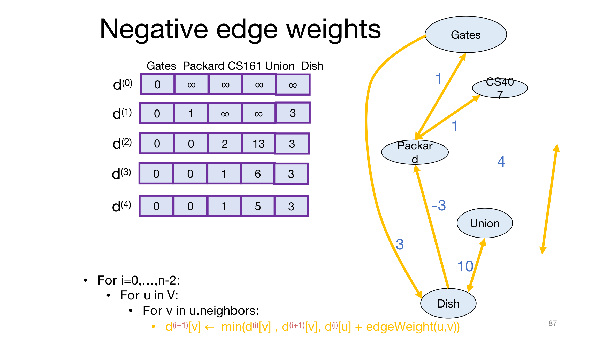
그래프는 Gates–Packard(1), Packard–CS407(1), CS407–Union(4), Union–Dish(10)가 양방향 간선이고, Gates → Dish(3)와 Dish → Packard(−3)가 한 방향 간선입니다. 음수 간선 Dish → Packard를 포함하는 순환은 Dish → Packard → Gates → Dish(\(-3 + 1 + 3 = 1\))와 Dish → Packard → CS407 → Union → Dish(\(-3 + 1 + 4 + 10 = 12\))뿐이어서 음수 순환은 없습니다.
| Gates | Packard | CS407 | Union | Dish | |
|---|---|---|---|---|---|
| \(d^{(0)}\) | 0 | \(\infty\) | \(\infty\) | \(\infty\) | \(\infty\) |
| \(d^{(1)}\) | 0 | 1 | \(\infty\) | \(\infty\) | 3 |
| \(d^{(2)}\) | 0 | 0 | 2 | 13 | 3 |
| \(d^{(3)}\) | 0 | 0 | 1 | 6 | 3 |
| \(d^{(4)}\) | 0 | 0 | 1 | 5 | 3 |
- \(d^{(2)}[\text{Packard}] = 0\): 간선 두 개짜리 경로 Gates → Dish → Packard(\(3 - 3 = 0\))가 직통 간선(1)보다 쌉니다.
- 그 효과가 한 라운드에 간선 하나씩 퍼져 나갑니다. CS407은 \(d^{(3)}\)에서 \(0 + 1 = 1\), Union은 \(d^{(4)}\)에서 \(1 + 4 = 5\)가 됩니다.
- Union의 최단 경로 Gates → Dish → Packard → CS407 → Union은 간선이 정확히 \(4 = n - 1\)개이므로, \(n-1\)라운드를 모두 돌아야 답에 닿습니다.
같은 그래프에서 다익스트라를 돌리면
슬라이드에는 없지만, 이 그래프는 §1.7의 경고를 확인하기에 좋은 예입니다. 다익스트라는 여기서 틀린 답을 냅니다. §1.5의 의사코드대로 직접 따라가 보면 다음과 같습니다.
- Gates(0)를 확정하며 Packard를 1, Dish를 3으로 낮춥니다.
- 미확정 정점 가운데 가장 작은 Packard(1)를 확정합니다. 그러나 실제 거리는 Gates → Dish → Packard의 0입니다. 이어서 CS407을 2로 낮춥니다.
- CS407(2)을 확정하며 Union을 6으로 낮춥니다.
- Dish(3)를 확정하며 Packard를 0으로 낮추지만, Packard는 이미 확정되어 그 이웃을 다시 갱신하지 않습니다.
- Union(6)을 확정합니다.
결과는 CS407이 2, Union이 6으로, 실제 거리 1과 5보다 큽니다. §1.7의 증명에 대입하면 Packard를 확정하려는 순간 \(u\) = Packard, \(z\) = Dish이고, \(d(s,z) = 3 > d(s,u) = 0\)이어서 부등식 (b)가 깨집니다. 같은 그래프에서 벨만-포드는 위의 표대로 올바른 답 0, 0, 1, 5, 3을 냅니다.
2.11 음수 순환이 있는 벨만-포드 (B-F with Negative Cycles)
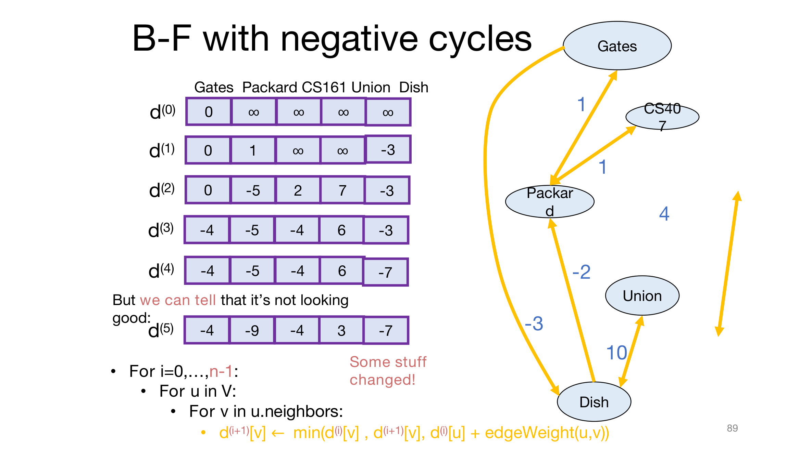
이번에는 Gates → Dish가 −3, Dish → Packard가 −2입니다. 순환 Gates → Dish → Packard → Gates의 비용이 \(-3 - 2 + 1 = -4\)이므로 음수 순환이 있습니다.
| Gates | Packard | CS407 | Union | Dish | |
|---|---|---|---|---|---|
| \(d^{(0)}\) | 0 | \(\infty\) | \(\infty\) | \(\infty\) | \(\infty\) |
| \(d^{(1)}\) | 0 | 1 | \(\infty\) | \(\infty\) | −3 |
| \(d^{(2)}\) | 0 | −5 | 2 | 7 | −3 |
| \(d^{(3)}\) | −4 | −5 | −4 | 6 | −3 |
| \(d^{(4)}\) | −4 | −5 | −4 | 0 † | −7 |
| \(d^{(5)}\) | −4 | −9 | −4 | 0 † | −7 |
† 슬라이드에는 \(d^{(4)}[\text{Union}] = 6\), \(d^{(5)}[\text{Union}] = 3\)으로 적혀 있습니다. 그러나 \(d^{(3)}\)에서 이미 CS407이 −4이므로, 갱신식대로라면 \(d^{(4)}[\text{Union}] = \min(6,\; -4 + 4,\; -3 + 10) = 0\)이고 \(d^{(5)}[\text{Union}]\)도 0입니다. 포스트에서 갱신식을 그대로 실행해 확인한 값이며, 나머지 칸은 모두 슬라이드와 같습니다. 이 차이는 아래의 결론에 영향을 주지 않습니다.
- “상황이 좋아 보이지 않습니다!” (슬라이드 88) — 출발점 Gates의 값이 \(d^{(3)}\)에서 −4가 됩니다. 순환 Gates → Dish → Packard → Gates를 한 바퀴 돌아 자기 자신으로 −4에 돌아올 수 있기 때문입니다. 이후로도 값들은 계속 내려갑니다.
- 하지만 상황이 좋지 않다는 것을 알아챌 수 있습니다. (슬라이드 89) — 반복을 \(n-2\)가 아니라 \(n-1\)까지 한 번 더 돌려 \(d^{(5)} = d^{(n)}\)을 계산하면, 무언가 바뀝니다! Packard가 −5에서 −9로 내려갔습니다.
2.12 벨만-포드가 음수 순환을 다루는 법 (How Bellman-Ford Deals with Negative Cycles)
- 음수 순환이 없으면:
- 모든 것이 제대로 동작합니다.
- 알고리즘은 \(n-1\)라운드 뒤에 안정됩니다.
- 참고: 음수 간선은 괜찮습니다!!
- 음수 순환이 있으면:
- 모든 것이 제대로 동작하지는 않습니다…
- 애초에 동작할 수가 없습니다. 음수 순환이 있으면 최단 경로가 잘 정의되지 않기 때문입니다.
- \(d[v]\) 값들이 계속 바뀝니다.
- 모든 것이 제대로 동작하지는 않습니다…
- 해법:
- 한 라운드 더 돌려서 무언가 바뀌는지 봅니다.
- 바뀌면 NEGATIVE CYCLE ☹을 반환합니다.
- (의사코드는 건너뛴 슬라이드에 있습니다.)
- 한 라운드 더 돌려서 무언가 바뀌는지 봅니다.
2.13 벨만-포드 알고리즘 (Bellman-Ford Algorithm)
Bellman-Ford*(G, s):
d(0)[v] = ∞ for all v in V
d(0)[s] = 0
For i = 0, ..., n-1: # n-2가 아니라 n-1까지: d(n)을 한 번 더 계산
For u in V:
For v in u.neighbors:
d(i+1)[v] ← min( d(i)[v], d(i+1)[v], d(i)[u] + edgeWeight(u,v) )
If d(n-1) != d(n): # 마지막 한 라운드에서 무언가 바뀌었다면
Return NEGATIVE CYCLE ☹
Otherwise, dist(s, v) = d(n-1)[v]슬라이드는 이 판정이 옳은 이유를 다음 강의로 미뤘습니다. §2.7의 명제만으로 양쪽 방향을 모두 확인할 수 있습니다.
- 음수 순환이 없으면 \(d^{(n)} = d^{(n-1)}\)입니다. 명제에 의해 \(d^{(n)}[v]\)는 간선 \(n\)개 이하 경로의 최소 비용인데, 음수 순환이 없으면 단순 경로만 보면 충분하므로 그 값은 간선 \(n-1\)개 이하 경로의 최소 비용 \(d^{(n-1)}[v]\)와 같습니다. 잘못 경보를 울리는 일은 없습니다.
- \(s\)에서 도달할 수 있는 음수 순환이 있으면 \(d^{(n)} \ne d^{(n-1)}\)입니다. 거꾸로 \(d^{(n)} = d^{(n-1)}\)이라고 해 봅시다. \(d^{(i+1)}\)은 \(d^{(i)}\)만으로 정해지므로, 이후의 모든 라운드에서도 값이 그대로 멈춰 있게 됩니다. 그런데 명제에 의해 \(d^{(k)}[v]\)는 간선 \(k\)개 이하 경로의 최소 비용이고, 음수 순환 위의 정점 \(v\)에 대해서는 그 순환을 더 많이 도는 경로가 계속 더 싸지므로 \(k\)가 커지면 \(d^{(k)}[v]\)가 한없이 작아져야 합니다. 모순입니다.
요약 슬라이드는 “음수 순환이 있으면 negative cycle을 반환한다”고 적지만, 정확히는 \(s\)에서 도달할 수 있는 음수 순환입니다. \(s\)에서 닿지 않는 곳에 있는 음수 순환 위의 정점들은 값이 끝까지 \(\infty\)로 남아 바뀌지 않으므로 감지되지 않습니다. 다만 그런 순환은 \(s\)에서의 거리에 아무 영향도 주지 않으므로, 단일 출발점 최단 경로 문제의 답에는 지장이 없습니다.
2.14 요약 (Summary)
슬라이드는 빨리 지나갔어도 괜찮다, 벨만-포드는 다시 다룰 것이라고 덧붙이며 정리합니다.
- 벨만-포드 알고리즘은 음수 간선 가중치가 있는 가중 그래프에서 최단 경로를 찾습니다.
- 정점이 \(n\)개, 간선이 \(m\)개인 그래프 \(G\)에서 \(O(nm)\) 시간에 동작합니다.
- \(G\)에 음수 순환이 없으면, 알고리즘은 \(d^{(n-1)}[v] = d(s,v)\)로 끝납니다.
- \(G\)에 음수 순환이 있으면, 알고리즘은 negative cycle을 반환합니다.
2.15 벨만-포드도 실제로 쓰입니다 (Bellman-Ford Is Also Used in Practice)
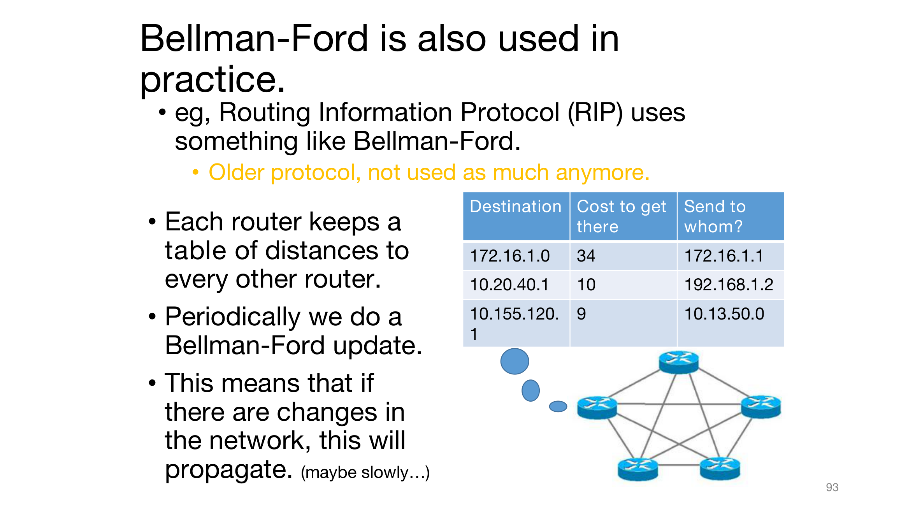
- 예: 라우팅 정보 프로토콜(Routing Information Protocol, RIP)이 벨만-포드와 비슷한 것을 씁니다.
- 오래된 프로토콜이라, 지금은 그다지 쓰이지 않습니다.
- 각 라우터는 다른 모든 라우터까지의 거리 표를 들고 있습니다.
- 주기적으로 벨만-포드 갱신을 합니다.
- 그러므로 네트워크에 변화가 생기면 그것이 퍼져 나갑니다. (어쩌면 천천히…)
| 목적지 | 가는 비용 | 누구에게 보낼까 |
|---|---|---|
| 172.16.1.0 | 34 | 172.16.1.1 |
| 10.20.40.1 | 10 | 192.168.1.2 |
| 10.155.120.1 | 9 | 10.13.50.0 |
벨만-포드의 갱신 \(d[v] \leftarrow \min(d[v], d[u] + w(u,v))\)에서 \(v\)가 알아야 하는 것은 자기 이웃 \(u\)의 값과 그 이웃까지의 간선 비용뿐입니다. 그래서 라우터마다 이웃에게서 표를 받아 자기 표를 고치는 식으로, 네트워크 전체 지도 없이도 알고리즘을 나누어 돌릴 수 있습니다. 여담(Aside)의 “내 컴퓨터는 인터넷 지도를 저장하고 있지 않다”는 어려움에 대한 답이 여기에 있습니다.
되짚어보기: 최단 경로 (Recap: Shortest Paths)
슬라이드는 세 알고리즘을 한 장으로 정리합니다.
| 알고리즘 | 장점 (+) | 단점 (−) |
|---|---|---|
| BFS | \(O(n+m)\) | 가중치 없는 그래프에서만 동작합니다. |
| 다익스트라 | 가중 그래프에서 동작합니다. 제대로 구현하면 \(O(n\log n + m)\)입니다. | 음수 간선 가중치를 쓸 수 없습니다. 매우 중앙집중적입니다 — 어느 정점을 갱신할지 알려면 모든 정점을 추적해야 합니다. |
| 벨만-포드 | 음수 가중치가 있어도 가중 그래프에서 동작합니다. 각 정점이 이웃의 정보만 쓰는 분산 방식으로 돌릴 수 있습니다. | \(O(nm)\) |
다익스트라가 중앙집중적인 이유는 매 반복의 첫 줄 — 미확정 정점 전체 가운데 \(d[u]\)가 가장 작은 것을 고르기 — 에 있습니다. 벨만-포드에는 그 줄이 없고, 바로 그 차이가 느린 대신 음수 간선을 견디고 나누어 돌릴 수 있는 성질을 함께 만들어 냅니다.
다음 시간 (Next Time)
- 동적 계획법 (Dynamic Programming)!!!
벨만-포드는 다음 강의에서 더 엄밀하게 다시 다루겠다고 예고되어 있습니다(69장). 71장이 다음 강의에서 밝히겠다고 한 “교육적인 이유” — 배열을 라운드마다 따로 두는 것 — 도 그때 설명될 것입니다.
정리하며 (Closing Remarks)
이번 강의의 논리 사슬을 단계별로 압축하면 다음과 같습니다.
| 단계 | 내용 | 근거 |
|---|---|---|
| ① 문제 설정 | 간선에 가중치가 있으면 경로의 비용은 가중치의 합이고, 거리 \(d(s,v)\)는 최소 비용이다. BFS의 간선 수는 더 이상 거리가 아니다 | Gates → Union 예제(45 대 6) |
| ② 부분 경로의 최적성 | 최단 경로의 부분 경로도 최단 경로이므로, 한 출발점에서의 최단 경로들은 하나의 트리로 모인다 | 워밍업(귀류법) |
| ③ 다익스트라의 규칙 | 미확정 정점 가운데 \(d[u]\)가 가장 작은 것을 골라 이웃을 \(d[v] \leftarrow \min(d[v], d[u] + w(u,v))\)로 갱신하고 확정한다 | 실과 중력의 직관, 예제 실행 |
| ④ 주장 1 | \(d[v]\)는 늘 실제 경로의 길이이므로 \(d[v] \ge d(s,v)\)이다. 가중치의 부호와 무관하다 | 반복 횟수에 대한 귀납법 |
| ⑤ 주장 2 | 가중치가 음이 아니면, 확정되는 순간 \(d[u] = d(s,u)\)이다. 아니라면 최단 경로 위의 마지막 좋은 정점 \(z\)와 다음 정점 \(z'\)에서 모순이 생긴다 | 확정 순서에 대한 귀납법과 귀류법 |
| ⑥ 수행 시간 | 전체는 \(n(T(\texttt{findMin}) + T(\texttt{removeMin})) + m\,T(\texttt{updateKey})\)이고, 배열 \(O(n^2)\), 레드-블랙 트리 \(O((n+m)\log n)\), 피보나치 힙 \(O(n\log n + m)\)이다 | 자료구조별 연산 비용 |
| ⑦ 다익스트라의 한계 | 음수 간선에서 틀리고, 비용이 바뀌면 처음부터 다시 돌려야 하며, 모든 정점을 알아야 하는 중앙집중 방식이다 | 주장 2의 가정, OSPF |
| ⑧ 벨만-포드의 규칙 | 정점을 고르지 않고 모든 간선을 \(n-1\)라운드 동안 갱신하며, 별표 버전은 라운드마다 배열 \(d^{(i)}\)를 따로 둔다 | 의사코드, 예제 실행 |
| ⑨ 벨만-포드의 불변식 | \(d^{(i)}[v]\)는 간선 \(i\)개 이하 경로의 최소 비용이고, 음수 순환이 없으면 단순 경로로 충분하므로 \(d^{(n-1)}[v] = d(s,v)\)이다. 비용은 \(O(nm)\)이다 | 라운드 수에 대한 귀납법 |
| ⑩ 음수 순환 | 비용이 음수인 순환이 있으면 최단 경로가 \(-\infty\)로 정의되지 않고, 한 라운드 더 돌려 \(d^{(n)} \ne d^{(n-1)}\)이면 negative cycle을 반환한다 | 음수 순환 예제, 불변식 |
| ⑪ 정리 | BFS는 빠르지만 가중치가 없을 때만, 다익스트라는 음이 아닌 가중치에서 빠르게, 벨만-포드는 느리지만 음수 가중치와 분산 환경에서 쓰인다 | 최단 경로 Recap |